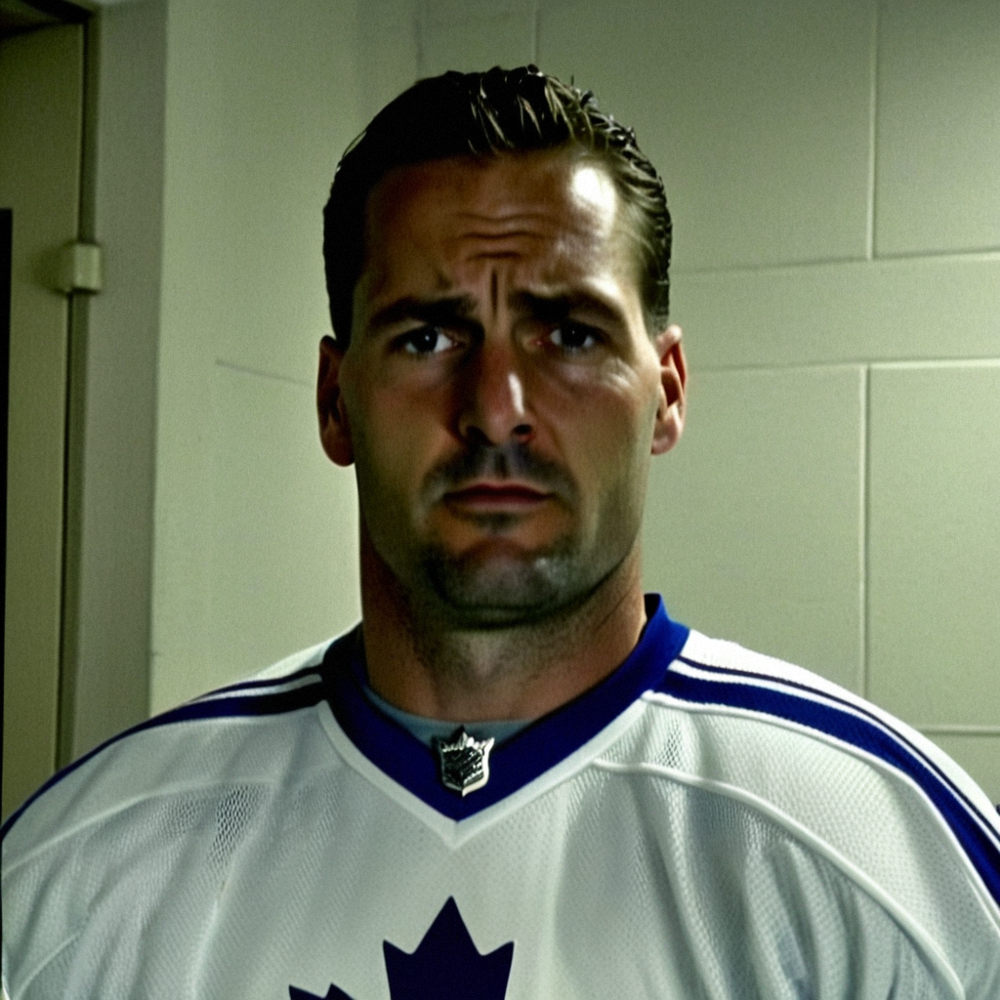
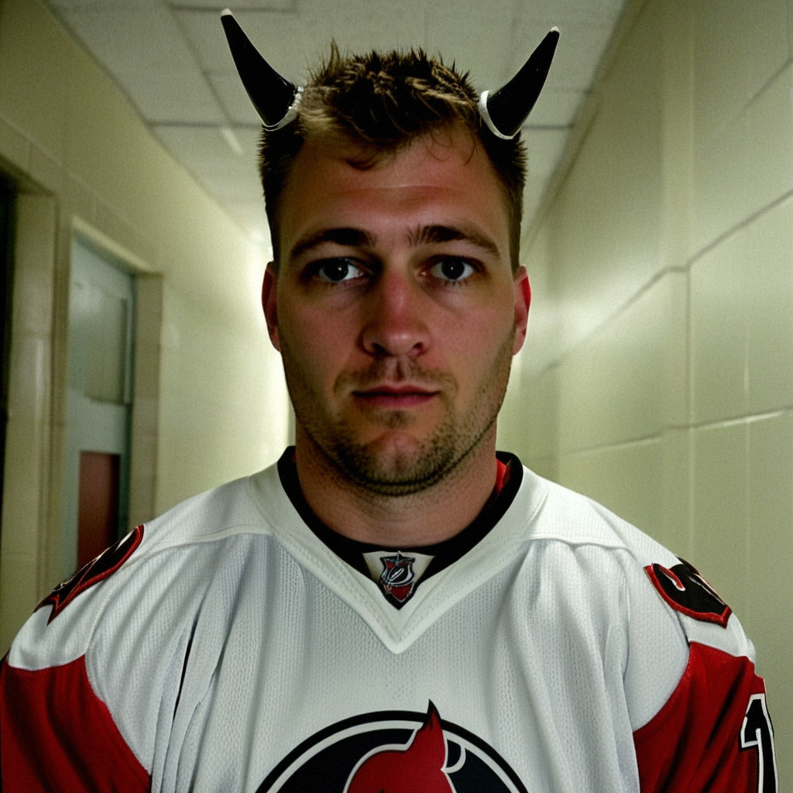
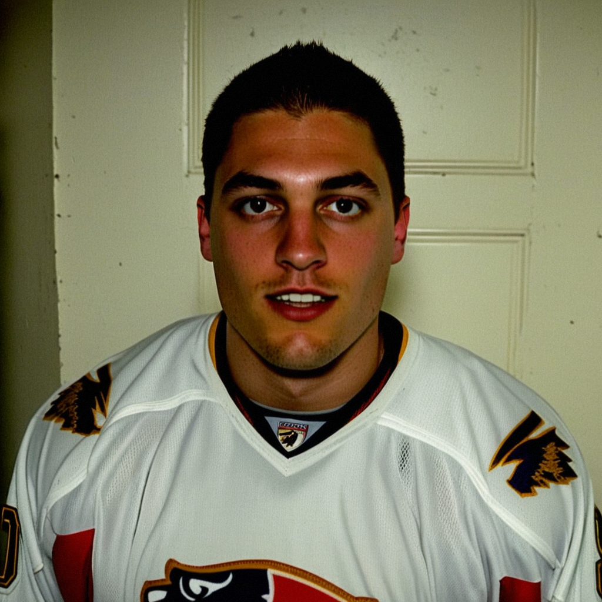
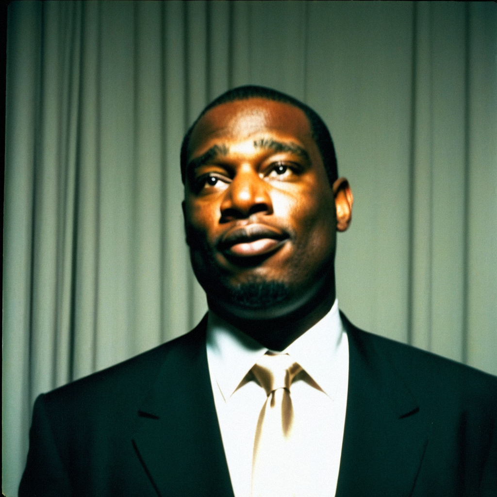
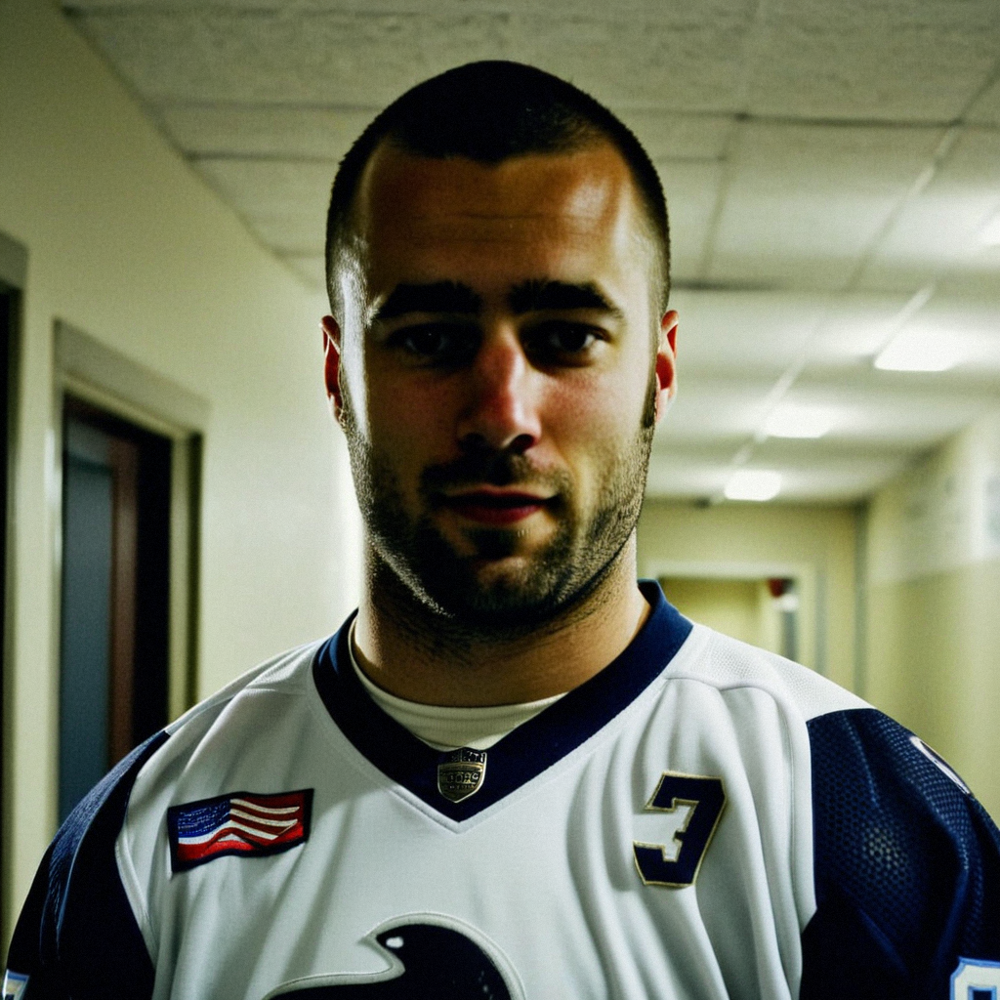

Post-game ·2:40
·2:40
·2:40Gaborik: 'Nobody Talk About My 37 In That Room'
The league's leading scorer found the net again, and the road, and the 32-shot number, still stung.
 ·4:54
·4:54The 249th pick in 1994 has 72 points in 42 games on a contract that expires in June, and he tells Marcus Bell he still plays like the kid nobody drafted until round nine.
Synthetic voices. Every interview on this desk is produced from the league's record; the voices are generated.
·2:40The league's leading scorer found the net again, and the road, and the 32-shot number, still stung.

 ·2:16
·2:16Two goals and a helper from the Avalanche captain were not enough at home, and he is honest about what went wrong: the back end, the screens, the tight ones that used to land his way.

·2:28The 38-year-old left wing picked up his 50th point of the season on a net-front battle in a 2-1 win where TOR managed 13 shots against 34.

 ·2:51
·2:51The Devils' goaltender, 22 wins in 33 games and still no shutout, talks about the protection in front of him and the one save he keeps missing.
 ·2:58
·2:58Toronto's 24-year-old centre scored the fifth goal in a 5-0 win over Boston, talked through the goalie switch and the line changes, and gave Jan Kowalczyk the answer he owed him since December.

 ·2:16
·2:16Florida's goaltender on winning in a building on edge, and what three different goal scorers do to the man behind them.
 ·1:23
·1:23The 18-year-old center scored in Toronto's 7-0 rout of New Jersey and said the blowout ice was welcome, but he is chasing the minutes that matter.
 ·2:00
·2:00The 35-year-old's Development Index moved from minus 3 to minus 1 in two weeks; the minutes came down, the role changed shape, and tonight he scored none of seven in a blowout he watched from the ice.

 ·2:14
·2:14The goaltender, up 3 on the Bureau's Index with an overall of 97, pointed at his own side's 18 shots as the one variable he cannot control from the crease.
 ·5:30
·5:30The Columbus captain on the 2,000-mile road back to the Blue Jackets, the system that unlocked his game, and why 38 goals in 38 games at 32 feels less like a fluke than a homecoming.

 ·3:10
·3:10The Sharks coach said his young core is the move after a 6-4 win over Chicago broke four games without a regulation victory, and shrugged off the quiet front office.
 ·2:32
·2:32The Maple Leafs captain scored three in a 4-1 road win and talked about what reading the play early, instead of winning it, has done to his game at 33.

 ·1:57
·1:57The Canucks' right winger on a 6-3 home loss to Montreal, the defensemen who filled in, and why the room went quiet after.

 ·2:24
·2:24The Stars' goaltender says the 13-3 home record starts with the legs being better and the head being clear, and says he did not change a thing between the Philly loss and tonight.
 ·2:42
·2:42Toronto's speed winger on the overtime loss in Vancouver, the sequence he remembers, and why the standings do not interest him tonight.

 ·5:25
·5:25Not a contract year, a 50 in the faceoff dot, and the one rival whose transition he'll never have: the Philadelphia captain sits down with Jan Kowalczyk.
 ·1:45
·1:45On the second straight night of a road trip, the 38-year-old winger credits a clean penalty kill and an early goal for making a 4-0 shutout easy, his two assists carrying the league's best record to six straight wins.
 ·1:41
·1:41The Swede had his best night of the season against the club that drafted him thirteen years ago, and afterward talked about nobody but the men around him.

 ·3:09
·3:09After a 3-2 loss in overtime to the league's best team, Calgary's coach talks about close games, the goaltending, and why 11-20-4 isn't an effort story.
 ·1:08
·1:08Held off the scoresheet in an overtime loss to the league leader, Jarome Iginla says the night showed what the Flames room can still do with the season slipping.
 ·3:06
·3:06The 39-year-old goaltender owns the Bureau's consistency grade and explains why 11 wins in 12 starts still says everything.

 ·7:04
·7:04The Hart Trophy winner talks about leading without a letter, about Mike Comrie, and about what his mother says when he calls home from a hotel in Columbus.
 ·1:55
·1:55The right wing shrugs off three short absences, a role cut by seven minutes, and a grade that has him below his base.

 ·3:34
·3:34After the fifth straight, Dominik Hasek on the read that takes him to the faceoff circle, the kill he says belongs to the defensemen, and what he sees from the only seat in the building where you watch both power plays at once.
 ·3:17
·3:17Back in the lineup after a short absence, the captain had no points in a 7-1 win and said the game slowed down once he let Gaborik and Richards work.
 ·3:19
·3:19The Ducks goalie gave up four on 20 shots against San Jose, then watched Fedorov's two-goal night lift the club to a two-game win streak.
 ·2:39
·2:39The Stars' goaltender says the 5-1 loss was gone before the final period, and that his team can't afford to hand points to 10-win clubs while chasing the top of the West.
 ·2:09
·2:09Marian Gaborik has 26 goals in 32 games on shorter shifts this season, and the Maple Leafs lead the league at 52 points.
 ·1:40
·1:40After the 4-3 win over Minnesota that gives Nashville its seventh straight, the 28-year-old Czech says the streak belongs to the room and the missing shutout is the one number he can't let go.

 ·2:59
·2:59After a 3-2 road win at PHX, the Kings' head coach confirms his starter for Saturday and lays out why the young men are on the second line.